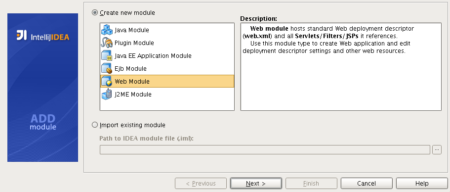
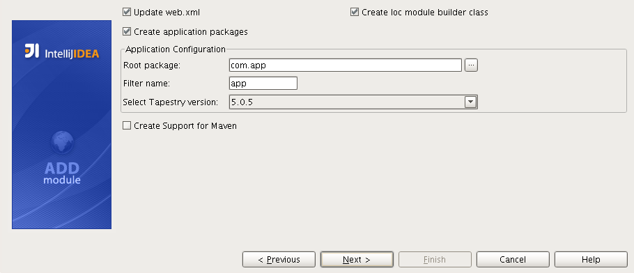
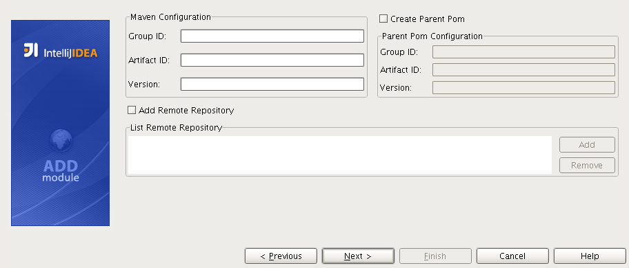
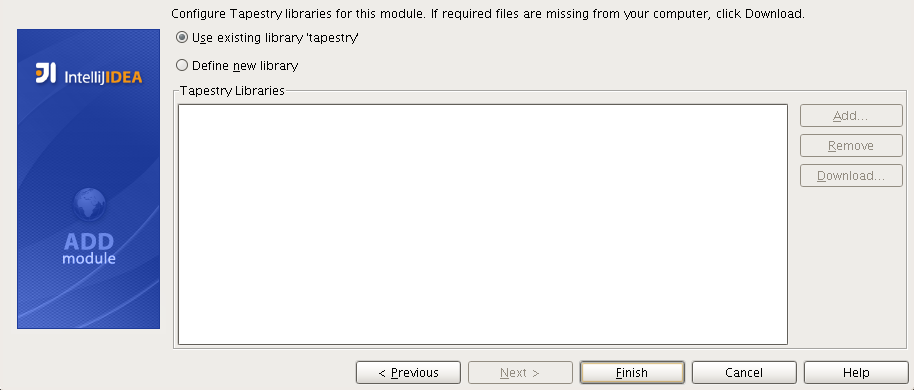
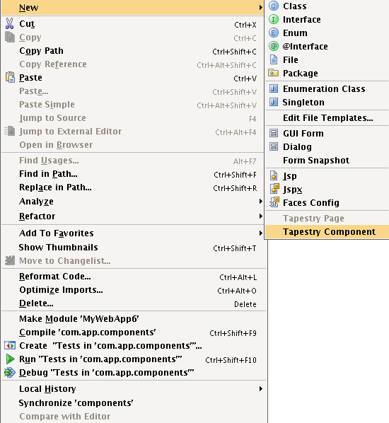
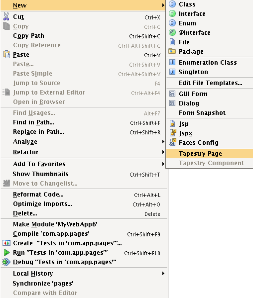
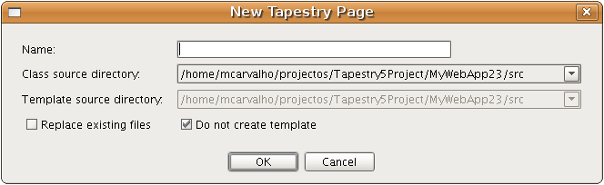

This plugin provides additional wizards to help you deal with the most common tasks.
This section covers the following wizards:
This plugin allows you to get a Tapestry project up and running quickly by providing special support for
Tapestry in the
new module wizard.
The generated web module will be a ready-to-run Tapestry web application
with a sample Home page.
The general flow of the module creation process is similar to the described in the
Creating Modules section.
This subsection describes only features specific for the Tapestry Web
Module creation.
At Step 1 select the
Web Module item in the module list.

Steps 2 to 6 are the same as in the normal web module creation.
Step 7 is different. Here you need to specify that you want this web
module to
have Tapestry support.

Every step from here on is specific to Tapestry.
In Step 8 you need to specify Tapestry related information:

-
Update web.xml
Check to update the main deployment descriptor(web.xml) with Tapestry specific
configurations.
-
Create Ioc module builder class
Check to generate a new module builder class.
-
Create Ioc module builder class
Check to generate a new module builder class.
-
Create application packages
Check to create the base packages for a Tapestry application.
-
Root package
The application root package.
-
Filter name
The name of the filter that will be configured in your web.xml.
-
Tapestry version
The Tapestry version to use.
-
Create Support for Maven
Check to generate a pom.xml file with basic project configuration.
This step is specific to Maven.
In Step 9 you need to specify Maven related information:

-
Group ID
The group that this Maven project belongs to.
-
Artifact ID
The artifact ID of this Maven project.
-
Version
The version of this Maven project(optional).
-
Create Parent Pom
Check to generate a parent pom section in your pom.xml.
-
Parent Group ID
The parent pom group ID.
-
Parent Artifact ID
The parent pom artifact ID.
-
Version
The parent pom version.
-
Add Remote Repository
Check to generate a remote repositories sections in your pom.xml file.
In Step 10 you can configure the Tapestry libraries.

Here you can add the Tapestry dependencies in three ways:
-
Use existing library
If you have a configured library with the Tapestry jars you can select
it to be used in this new module.
-
Download jars
If you don't have any library created then you can let the plugin download the jars from a remote
location and create the library for you.
-
Add jars
If you already have the jars in you computer you can add select them and a new library will be created.
This wizard allows you to create a new component(class and template) in your Tapestry project.
1. Select the destination component package.
2. Right-click the node, point to New
and click Tapestry Component.

3. Enter the required information about the component.

-
Name
The component name. Can include "/" as path separators.
-
Class source directory
The java source root to add the component class to.
-
Class template directory
The web context root to add the component template to.
-
Replace existing files
Check if you want to replace existing files with the ones that are create by this wizard.
-
Do not create template
Allows the user to create a new element without a template.

|
For the wizard to be enabled you have to right-click in a package under the "components"
package in your configured application root.
|

|
You can change the generated class and template by editing the corresponding file templates.
|
|
|
The wizard will remember you last selection for the class and template directory so you
won't have to select it every time you use this wizard.
|
This wizard allows you to create a new page(class and template) in your Tapestry project.
1. Select the destination page package or web context folder.
2. Right-click the node, point to New
and click Tapestry Page.

3. Enter the required information about the page.

-
Name
The page name. Can include "/" as path separators.
-
Class source directory
The java source root to add the page class to.
-
Class template directory
The web context root to add the page template to.
-
Replace existing files
Check if you want to replace existing files with the ones that are create by this wizard.
-
Do not create template
Allows the user to create a new element without a template.
|
|
For the wizard to be enabled you have to right-click in a package under the "pages"
package in your configured application root or under any web context folder.
|
|
|
You can change the generated class and template by editing the corresponding file templates.
|
|
|
The wizard will remember you last selection for the class and template directory so you
won't have to select it every time you use this wizard.
|
This wizard allows you to create a new mixin in your Tapestry project.
1. Select the destination mixin package.
2. Right-click the node, point to New
and click Tapestry Mixin.

3. Enter the required information about the mixin.

-
Name
The mixin name. Can include "/" as path separators.
-
Class source directory
The java source root to add the mixin class to.
-
Replace existing files
Check if you want to replace existing files with the ones that are create by this wizard.
|
|
For the wizard to be enabled you have to right-click in a package under the "mixins"
package in your configured application root.
|
|
|
You can change the generated class by editing the corresponding file templates.
|
|
|
The wizard will remember you last selection for the class directory so you
won't have to select it every time you use this wizard.
|
|